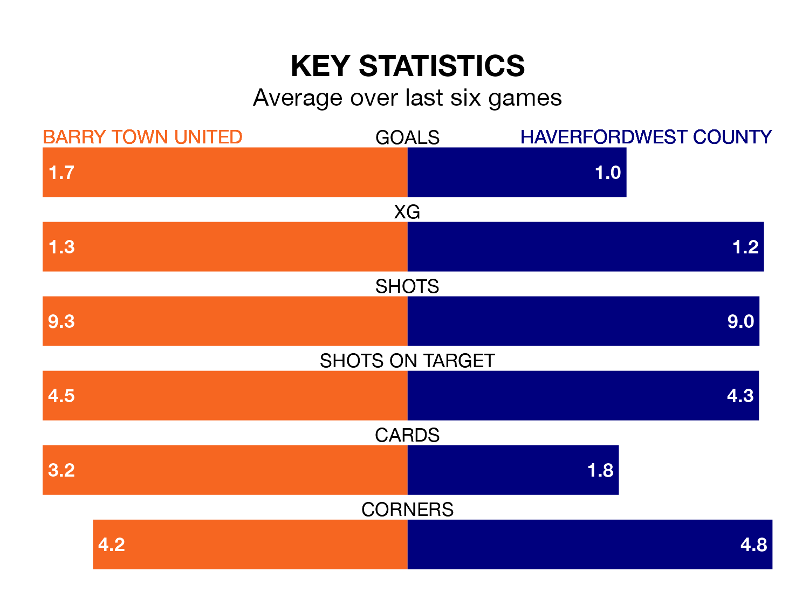

The Welsh Premier League's top two sides face each other at Jenner Park in Friday's late kick-off, when zero-placed Barry Town United host zero-placed Haverfordwest County.
Barry Town have picked up six wins and six draws from 24 games so far this season, and sit five points below the visitors going into the 7.45pm match.
The Bluebirds, meanwhile, have won seven and drawn eight, picking up 29 points.
In the last 10 years, Barry Town and Haverfordwest have played each other on nine occasions. Barry Town won two of them, Haverfordwest five, and they drew twice.
On average, the Dragons scored 1.2 goals and the Bluebirds 1.9 in those matches.
Their last meeting was on December 26, when Haverfordwest won 2-0 at home.
Barry Town are in mixed form in the Welsh Premier League, with two wins and two draws from their last six games.
With a win and two draws over that period, Haverfordwest's form is worse – they have taken five points from 18, compared to United's eight.
With 29 goals in 24 games so far this season, the Dragons are the league's joint--1th-lowest scorers with 1.2 goals per game. And they are conceding more than average, letting in 46 goals at a rate of 1.9 per game.
County are also below average scorers, with 1.2 goals per game, compared to a league average of 1.5. They have conceded 1.5 goals per game.
Barry Town's last match was on February 10, a 2-2 draw against Penybont, with Aiden Lewis and Sam Snaith getting the goals for the Dragons.
Haverfordwest drew 1-1 with Pontypridd Town AFC last time out, on February 9, with Ben Fawcett on the scoresheet.
Updated: 10:08 (UTC), 23/02/24